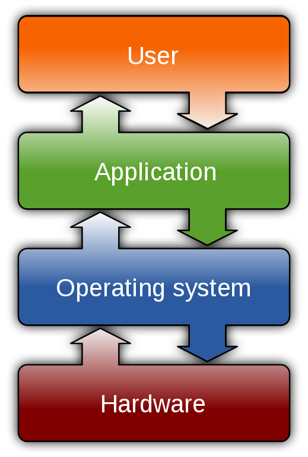
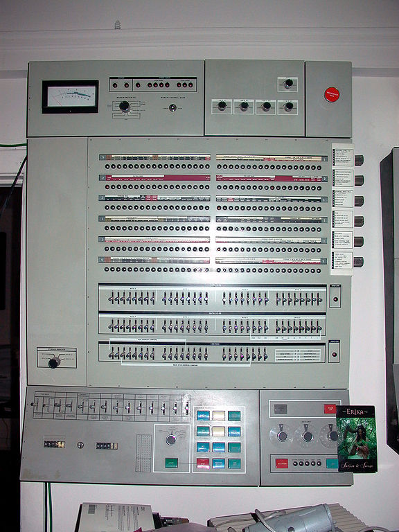
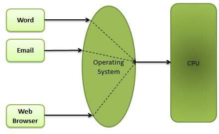
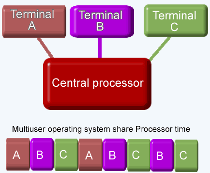
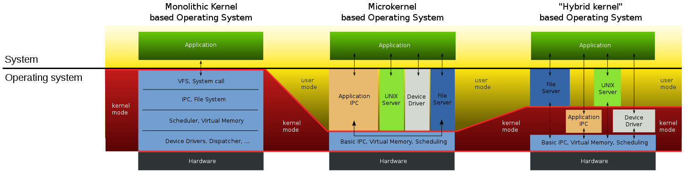
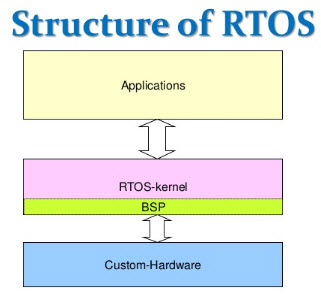

Operating Systems:

Computer operating systems (OSes) provide a set of functions needed and used by most application programs on a computer, and the links needed to control and synchronize computer hardware.
On the first computers, with no operating system, every program needed the full hardware specification to run correctly and perform standard tasks, and its own drivers for peripheral devices like printers and punched paper card readers.
The growing complexity of hardware and application programs eventually made operating systems a necessity for everyday use.
Brief History:
Early computers were built to perform a series of single tasks, like a calculator.Operating systems did not exist in their modern and more complex forms until the early 1960s.
Hardware features were added, that enabled use of runtime libraries, interrupts, and parallel processing. When personal computers became popular in the 1980s, operating systems were made for them similar in concept to those used on larger computers.

In the 1940s, the earliest electronic digital systems had no operating systems. Electronic systems of this time were programmed on rows of mechanical switches or by jumper wires on plug boards.
After programmable general purpose computers were invented, machine languages were introduced that sped up the programming process.OS/360 was used on most IBM mainframe computers beginning in 1966, including computers used by the Apollo program.
In the early 1950s, each user had sole use of the computer for a limited period of time. The program would be loaded into the machine, and the machine would be set to work until the program completed or crashed. Programs could generally be debugged via a front panel using toggle switches and panel lights. It is said that Alan Turing was a master of this on the early Manchester Mark 1 machine, and he was already deriving the primitive conception of an operating system from the principles of the universal Turing machine
Later machines came with libraries of programs, which would be linked to a user's program to assist in operations such as input and output and generating computer code from human-readable symbolic code.However, machines still ran a single job at a time.An improvement was the Atlas Supervisor introduced with the Manchester Atlas commissioned in 1962, "considered by many to be the first recognisable modern operating system". Brinch Hansen described it as "the most significant breakthrough in the history of operating systems."
Types Of Operating Systems:
-
Single and multi-tasking OS:

A single-tasking system can only run one program at a time, while a multi-tasking operating system allows more than one program to be running in concurrency. This is achieved by time-sharing, where the available processor time is divided between multiple processes.
These processes are each interrupted repeatedly in time slices by a task-scheduling subsystem of the operating system.Cooperative multitasking is achieved by relying on each process to provide time to the other processes in a defined manner.
16-bit versions of Microsoft Windows used cooperative multi-tasking. 32-bit versions of both Windows NT and Win9x, used preemptive multi-tasking.
-
Single and multi-user OS:

Single-user operating systems have no facilities to distinguish users, but may allow multiple programs to run in tandem A multi-user operating system extends the basic concept of multi-tasking with facilities that identify processes and resources.
Resources include disk space, belonging to multiple users, and the system permits multiple users to interact with the system at the same time.
Time-sharing operating systems schedule tasks for efficient use of the system and may also include accounting software for cost allocation of processor time, mass storage, printing, and other resources to multiple users.
Distributed OS:

A distributed operating system manages a group of distinct computers and makes them appear to be a single computer.
The development of networked computers that could be linked and communicate with each other gave rise to distributed computing. Distributed computations are carried out on more than one machine.
When computers in a group work in cooperation, they form a distributed system.
-
Real-time OS:

A real-time operating system is an operating system that guarantees to process events or data by a specific moment in time.
A real-time operating system may be single- or multi-tasking, but when multitasking, it uses specialized scheduling algorithms so that a deterministic nature of behavior is achieved.
An event-driven system switches between tasks based on their priorities or external events while time-sharing operating systems switch tasks based on clock interrupts.